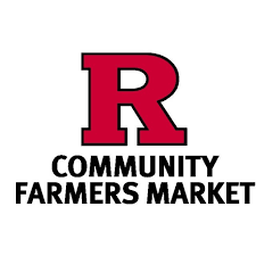
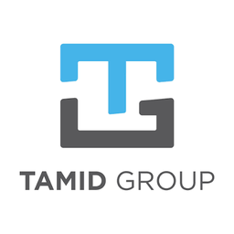
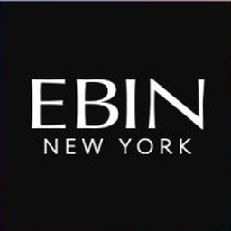

I'm a finance and analytics student who builds the models and the code behind deal work in gaming and sports betting.
Rutgers Honors College, Finance and Business Analytics & IT, graduating May 2029. Investment Banking Summer Analyst at XST Capital Group and Fund Analyst with TAMID Group.
Experience
Where I've worked, most recent first.
-

PresentRutgers Community Farmers Market
Rutgers UniversityNew Brunswick, NJ -

2026 to presentFund Analyst
TAMID Group at RutgersNew Brunswick, NJI research and pitch public equities for TAMID's student fund, and I've worked on a fundraising strategy for an Israeli startup accelerator.
-
May 2026 to Aug 2026
Investment Banking Summer Analyst
XST Capital Group, boutique M&A advisory for digital gaming, iGaming, and sports bettingJersey City, NJI worked on 3 live transactions, drafting a CIM for a $25M debt raise and building three-statement and DCF models. I also built a Python tool that tracks executive hiring across gaming to support business development.
-
Mar 2026 to May 2026
Technology Support
Rutgers University Institutional Planning & OperationsPiscataway, NJI restored 150+ Windows devices for resale across university departments and kept inventory records for 500+ technology assets.
-

Jun 2024 to Feb 2025Human Resources Intern, Strategic Planning
Ebin New YorkSouth Hackensack, NJI ran day-to-day HR operations for a 100+ person company, handling monthly requests and personnel records and onboarding 15+ new hires.
Externships
Selective programs that put me inside an institutional investing firm.
-
May 2026 to Jun 2026
Future Leaders Extern
MetLife Investment ManagementRemoteOne of 60 students selected for an institutional investing externship covering private markets, fixed income, and real estate.
Skills
What I bring to a deal team or an analytics team on day one.
Finance
- Financial modelingThree-statement projections, DCF, WACC, comparable company analysis
- M&A advisoryCIM drafting and modeling support on 3 live transactions
- Equity researchStock pitches with a written thesis and valuation
- Market intelligenceCompetitive positioning and investor landscape analysis
Data and code
- PythonData pipelines, automation, API integrations
- PostgreSQLQuerying and shaping data for analysis
- LLM toolingClaude API and OpenAI Whisper for research workflows
- APIs and data sourcingREST APIs, RSS feeds, structured web data
Tools and communication
- Bloomberg TerminalBloomberg Market Concepts certified
- Excel and PowerPointFinancial models, pitch slides, client-ready decks
- Visual designNewsletter redesign and branded content series
- Video editingShort-form and long-form content